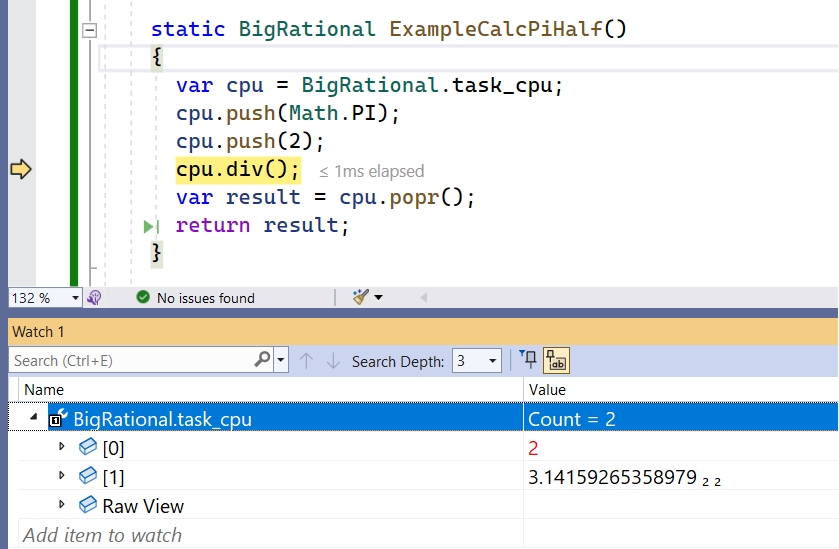

NewRational for .NET 6.0
Introduction
NewRational - a novel rational number class.
There are already many implementations of rational number classes called Rational, BigRational, Fraction etc.
For C# the useful ones are based on a combination of System.Numerics.BigInteger for numerator and denominator,
which in fact has the benefit of a really simple implementation.
It works fine but in praxis it has several disadvantages:
- Performance is limited by System.Numerics.BigInteger which is not primarily designed for rational arithmetic.
- Using BigInteger leads to a lot of unnecessary memory allocations for all the intermediate results at runtime, which means, extra work for the GC.
- Based on BigInteger the struct size of a Rational is unnecessary big, therefore also inefficient to use in Vector or Matrix classes.
- The system requires a lot of internal memory copies, bad for the overall performance.
- There is no way to benefit from the performance improvements in .NET Core, like using Spans, Buffers and Intrinsics.
NewRational is based on a completely new system to achieve better efficiency and performance.
The interface itself is of course the same as for all other numeric types, supporting the
basic arithmetic operations via operators, conversions from and to the numeric system types,
string formatting and parsing, binary serialization, etc.
As an immutable, readonly struct with only one array field, the layout is as small as possible and similar to a System.String.
Internal the class has its own big-integer calculation core, highly optimized for the purposes of rational arithmetics, encapsulated in a stack machine.
This stack machine is public and offers a second interface layer with a machine language like instruction set.
Using this interface allows optimization on function level with performance improvements by factor 4 to 10.
Example: Classic cross product for a Vector3 type, this one with: NewRational X, Y, Z;
public static Vector3R Cross(Vector3R a, Vector3R b)
{
var x = a.Y * b.Z - a.Z * b.Y;
var y = a.Z * b.X - a.X * b.Z;
var z = a.X * b.Y - a.Y * b.X;
return new Vector3R(x, y, z);
}
The same function can be optimized using the stack machine (cpu):
public static Vector3R Cross(Vector3R a, Vector3R b)
{
var cpu = NewRational.task_cpu;
cpu.mul(a.X, b.Y); cpu.mul(a.Y, b.X); cpu.sub();
cpu.mul(a.Z, b.X); cpu.mul(a.X, b.Z); cpu.sub();
cpu.mul(a.Y, b.Z); cpu.mul(a.Z, b.Y); cpu.sub();
return new Vector3R(cpu.pop_rat(), cpu.pop_rat(), cpu.pop_rat());
}
The optimized version performs 4 x faster, only 3 final normalizations and memory allocs are necessary (instead of 9 for the first version).
As the example shows, using the stack machine directly is not much more difficult or less readable.
Furthermore, this design separates the NewRational struct from the calculation core, the final number object is always normalized what makes the handling, comparsions etc. much easier and doesn't impact the performance of the calculations.
Data Layout
All data, numerator and denominator, is stored in a single variable-length uint array.
This gives the NewRational struct itself a machine word size and can therefore internal passed around as fast as possible.
public readonly struct NewRational
{
private readonly uint[] p; // the one and only field
The array starts with a uint header containing a sign-bit and the number of following uint digits for the numerator.
Diectly followed by the same structure for the denominator. The order is little-endian.
A null array, as default value of the struct, represents the number 0 (zero).

This simple structure has several advantages:
- Exchange, transfer, serialization and marshalling is easy, for example via COM.
- The calculation core can directly access the integer parts without conversions.
- As Span it is very efficient to build vectors or multidimensional matrices.
- The content is easy to debug.
The disadvantage is that small numbers that would fit in a machine word, also requires an array.
This is the price for a optimal throughput and less code as there are no special cases to handle.
Stack machine
The stack machine, named CPU, is implemented as nested class in NewRational to get access to the private member.
The class has only two private fields, an array of arrays of uint (uint[][] p) and a index (int i) that marks the current stack top.
public struct NewRational
{
public class CPU
{
uint[][] p; int i;
A push operation increases the index and can use the buffer at p[i], which is mostly already of the required size.
A pop operation does nothing else than decrement the index.
Each uint[] buffer in the stack represents a rational number with the same data layout as in struct NewRational.
Internally the stack is used excessively for all basic arithmetic operations
and so no further memory management is necessary.
However, in consequence, for every single calculation step with NewRational numbers it needs a instance of
such stack-machine object what is only efficient when it is as shared object always available.
For this there is one thread-local static instance named task_cpu, exposed as static property in NewRational.
public static CPU task_cpu
{
get { return _cpu ??= new CPU(); }
}
[ThreadStatic] private static CPU? _cpu;
Thread static means that each thread has its own instance of a task_cpu when needed, ensuring thread safety.
This simple system has the advantage that it is also easy to debug:
The system implies that the stack machine exposes an instruction set.
These instructions, for readability as short words, are self explaining basic commands like add(), sub(), mul(), div(), different push() and pop(), bit level operations like shl(), shr(), but also higher level commands like pow(), mod(), rnd() etc.
Since the rational numbers can have arbitrary size, it is important for the performance to avoid unnecessary memory copies.
This explains several versions of same instructions, for example:
cpu.push(x); // implies a memory copy
cpu.push(y); // implies a memory copy
cpu.add();
// For performance it is better to write:
cpu.add(x, y); // no copies necessary, same result
In general there is a difference to other stack machines, where the entries can be quickly copied, duplicated etc. since they are mostly in machine word size.
Here we have buffers of arbitrary size as stack entries and for performance it is all about to avoid unnecessary memory copies.
To do this there are swap instructions, cpu.swp(), which internally exchange buffer pointers and this operation is fast since a pointer has machine word size.
Performance comparsions
A test app is currently under development that will generate detailed benchmark reports comparing usual implementations with the new system.
In general, the performance increases by at least a factor of 2, by using the stack machine up to a factor of 10 and more.
This applies to geometric algorithms where precision is important and not so much calculating with gigantic numbers.
For really huge numbers, with kBytes of digit data, the bottleneck is the integer multiplication as O(n^2) operation (with simple algorithm).
Then, the performance of both systems equalizes again.
Using NewRational for pure integer arithmetic is not faster than using BigInteger.
But by using the stack machine in functions, iterations etc., the performance can be increased.